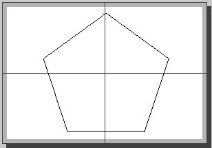

Printing
The steps for printing here assume the drawing was drawn in full-scale (1:1).
Printing quickly
- Click File > Print Preview, or click Print Preview ( ).
- Set or confirm the paper layout for the current drawing (Options > Current Drawing Preferences > Paper).
- From Print Preview mode, select the Fit to Page button ( ). This ensures the drawing is scaled to fit and is centered on the page.
- Click File > Print, or click Print ( ).
- Make any adjustments to the printer dialog, if necessary.
- If you are printing to a PDF file, you must select Print to file in the print dialog.
- Click Print.
Printing to scale
To print a drawing without a drawing border / title block template but to a specific scale requires a couple of additional steps.
-
Click File > Print Preview, or click Print Preview ( ).
- Set or confirm the paper layout for the current drawing (Options > Current Drawing Preferences > Paper).
- From Print Preview mode, select Fit to Page ( ). This establishes the largest scale that can be used for the paper size defined in the previous step.
- Select the desired scale from the dropdown menu on the Print Preview toolbar.
- Click Center to Page ( ) on the Print Preview toolbar.
-
The drawing can be repositioned on the page by moving the page behind the drawing. Click and hold anywhere in the drawing space and drag the paper to the desired position. Selecting Shift allows only horizontal movements of paper, and selecting Ctrl allows only vertical movements.
-
Click File > Print, or click Print ( ).
- Make any adjustments to the print dialog, if necessary.
- If you are printing to a PDF file, you must select Print to file in the print dialog.
- Click Print.
Printing to scale with dimensions
For a drawing drawn full scale (1:1) with dimensions, the size of dimensioning features needs to be adjusted for the print output. These sizes will depend on the desired scale of the print output. If they are not adjusted then the defined text size will apply and it may not be appropriate for large or small scale drawings.
Once the printing scale is defined (see previous section), the size of dimensions can be adjusted in Current Drawing Preferences with the parameter General Scale. It is recommended to enter the printing scale number as input value for General Scale (that is, 50 for a printing scale of 1:50). Since the printing scale of the drawing is 1:50, the dimension General Scale is 50 and the default text size is 2.5 mm, the printing size of the dimension text will be: 1/50 * 50 *2.5 = 2.5 mm.
Any non-dimension text added to the drawing (using the Text or MText tools) can't be modified through Drawing Preferences. Text must be modified using Properties from the Modify tools.
Check the final appearance of dimensioning features for the print output to ensure it suits your needs.
Printing to scale with a border and title block
You can print a drawing with a drawing border / title block template, but to a specific scale. Begin with a full-scale (1:1) drawing.
- Click File > Print Preview, or click Print Preview ( ).
- Set or confirm the paper layout for the current drawing (Options > Current Drawing Preferences > Paper).
- From Print Preview mode, click Fit to Page ( ). This establishes the largest scale that can be used for the paper size defined in the previous step. Ensure that you will still have enough space to fit the border and title block.
- Select the desired scale from the dropdown menu on the Print Preview toolbar.
- Click the Fixed checkbox to ensure that the scale doesn't change.
- Insert the page border and title block into the drawing.
- Confirm again the layout in Print Preview mode.
- Click File > Print, or click Print ( ).
- Make any adjustments to the print dialog, if necessary.
- If you are printing to a PDF file, you must select Print to file in the print dialog.
- Click Print.
Tiled printing
To print a drawing to the specific scale that is greater than an available paper, use tiled printing. In this case, the drawing is outputted in parts that can be put together to get the original drawing.
- Click File > Print Preview, or click Print Preview ( ).
- Set or confirm the paper layout for the current drawing (Options > Current Drawing Preferences > Paper).
- Select the desired scale from the dropdown menu on the Print Preview toolbar.
- Click Calculate number of pages... ( ). In Print Preview mode, this will show multiple pages placed side-by-side with the current drawing in the center. The number of pages used can be adjusted from Options > Current Drawing Preferences > Paper > Number of pages: Horizontally and Vertically.
- The drawing can be repositioned on the page by moving the page behind the drawing. Click and hold anywhere in the drawing space and drag the paper to the desired position. Selecting Shift allows only horizontal movements of paper and selecting Ctrl allows only vertical movements.
- Click File > Print, or click Print ( ).
- Make any adjustments to the print dialog, if necessary.
- If you are printing to a PDF file, you must select Print to file in the print dialog.
- Click Print.
Any margins will appear in gray in Print Preview mode. Tiled drawings may look similar to the following:
